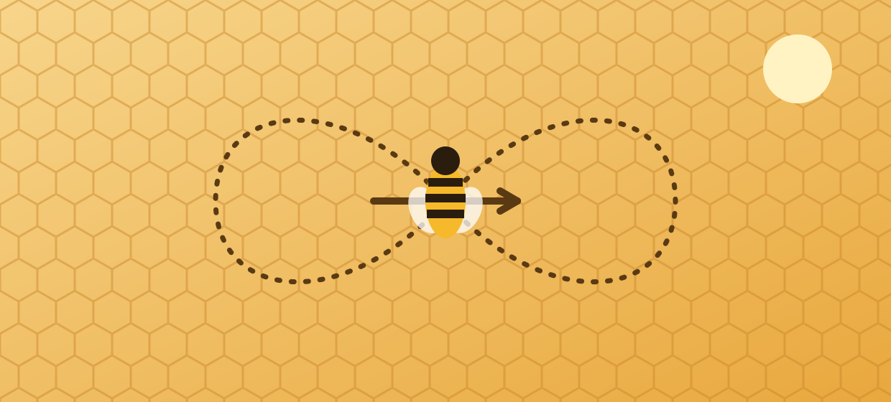

Biology
How honeybees talk: the waggle dance
A forager can tell her sisters exactly where the flowers are — with a dance.
When a honeybee finds a rich patch of flowers, she flies home and performs a figure-eight dance on the honeycomb. Her sisters crowd around her, following the vibrations in the dark hive.
The straight middle part of the dance — the waggle run — points toward the food relative to the sun. If the run goes straight up the comb, the flowers lie in the direction of the sun.
The longer the waggle, the farther the flowers: roughly one second of waggling means about a kilometre of flight.

Karl von Frisch decoded the dance in the 1940s and shared the Nobel Prize in 1973 for his work on bee communication.